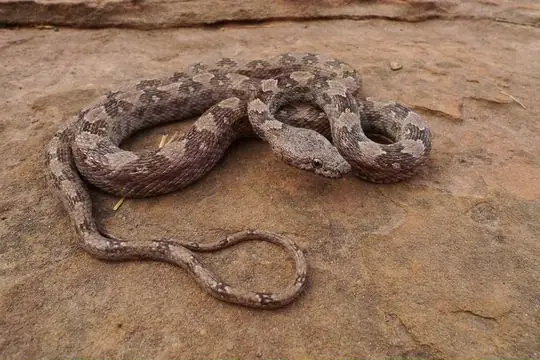
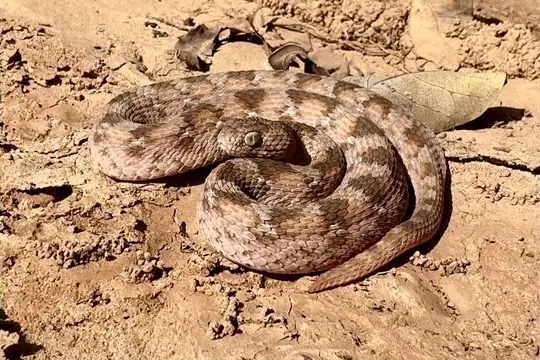
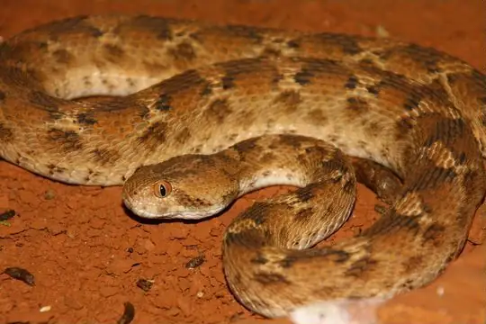
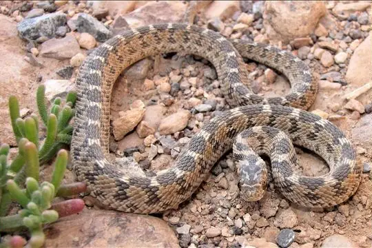
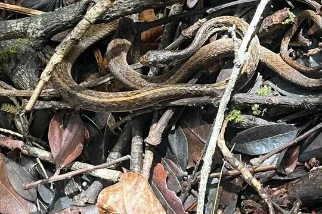
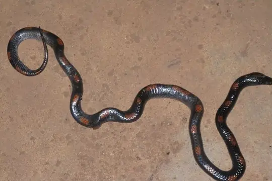

Snakes of Mali
64 living snake species are recorded in Mali in SnakeList: 27 venomous and 37 non-venomous, from 11 families. 1 fossil species found here is listed separately and not counted.
- 64living species
- 27venomous
- 37non-venomous
- 11families
- 1fossil, not counted
These totals count the unique living snake species SnakeList records in Mali; the 1 fossil species found here is listed separately and not counted. A species counts if it is recorded anywhere in the country, so not every snake lives in every part of it.
Species
Showing 64 species
- No photo yetAdler's Worm SnakeMyriopholis adleri
 African Brown Water SnakeAfronatrix anoscopus
African Brown Water SnakeAfronatrix anoscopus African File SnakeLimaformosa crossi
African File SnakeLimaformosa crossi African Rock PythonPython sebae
African Rock PythonPython sebae African Saw-scaled ViperEchis ocellatus
African Saw-scaled ViperEchis ocellatus Angolan Garter SnakeElapsoidea semiannulata
Angolan Garter SnakeElapsoidea semiannulata Ball PythonPython regius
Ball PythonPython regius Black-necked Spitting CobraNaja nigricollis
Black-necked Spitting CobraNaja nigricollis BoomslangDispholidus typus
BoomslangDispholidus typus Bouet's Worm SnakeMyriopholis boueti
Bouet's Worm SnakeMyriopholis boueti Brown House Snake (fuliginosus)Boaedon fuliginosus
Brown House Snake (fuliginosus)Boaedon fuliginosus Confusing Egg EaterDasypeltis confusa
Confusing Egg EaterDasypeltis confusa Desert Horned ViperCerastes cerastes
Desert Horned ViperCerastes cerastes
Dorr's RacerBamanophis dorri Dull Purple-glossed SnakeAmblyodipsas unicolor
Dull Purple-glossed SnakeAmblyodipsas unicolor Egyptian CobraNaja haje
Egyptian CobraNaja haje Elegant Sand RacerPsammophis elegans
Elegant Sand RacerPsammophis elegans Gambia Blind SnakeMyriopholis algeriensis
Gambia Blind SnakeMyriopholis algeriensis Gans' Egg EaterDasypeltis gansi
Gans' Egg EaterDasypeltis gansi Ghana Herald SnakeCrotaphopeltis hippocrepis
Ghana Herald SnakeCrotaphopeltis hippocrepis Ghana Shovel-snoutProsymna meleagris
Ghana Shovel-snoutProsymna meleagris Irregular Green SnakePhilothamnus irregularis
Irregular Green SnakePhilothamnus irregularis- No photo yetIvory Coast Snake-eaterPolemon neuwiedi

Joger's Saw-scaled ViperEchis jogeri Kalahari Sand SnakePsammophis afroccidentalis
Kalahari Sand SnakePsammophis afroccidentalis Lined Olympic SnakePsammophis lineatus
Lined Olympic SnakePsammophis lineatus Lineolate Blind SnakeAfrotyphlops lineolatus
Lineolate Blind SnakeAfrotyphlops lineolatus Mali CobraNaja katiensis
Mali CobraNaja katiensis Mole Viper (aterrima)Atractaspis aterrima
Mole Viper (aterrima)Atractaspis aterrima- No photo yetMole Viper (dahomeyensis)Atractaspis dahomeyensis
 Müller’s Sand BoaEryx muelleri
Müller’s Sand BoaEryx muelleri North African CatsnakeTelescopus tripolitanus
North African CatsnakeTelescopus tripolitanus Olive Grass RacerPsammophis phillipsii
Olive Grass RacerPsammophis phillipsii Olive Marsh SnakeNatriciteres olivacea
Olive Marsh SnakeNatriciteres olivacea Ornate Olympic SnakePsammophis praeornatus
Ornate Olympic SnakePsammophis praeornatus Pale Wolf SnakeLycophidion irroratum
Pale Wolf SnakeLycophidion irroratum- No photo yetRed-lipped SnakeCrotaphopeltis hotamboeia

Roman's Saw-scaled ViperEchis leucogaster Sahara Sand ViperCerastes vipera
Sahara Sand ViperCerastes vipera
Sahel Egg EaterDasypeltis sahelensis- No photo yetSahelian Burrowing AspAtractaspis micropholis
- No photo yetSavanna Lesser File SnakeGonionotophis grantii
- No photo yetSenegalese CobraNaja senegalensis

Senegalese Egg EaterDasypeltis latericia- No photo yetSmall-Scaled Burrowing AspAtractaspis microlepidota
 Smith's African Water SnakeGrayia smithii
Smith's African Water SnakeGrayia smithii Southern Sahel Speckled Shovel-snoutProsymna greigerti
Southern Sahel Speckled Shovel-snoutProsymna greigerti Spotted Blind SnakeAfrotyphlops punctatus
Spotted Blind SnakeAfrotyphlops punctatus Spotted Bush SnakePhilothamnus semivariegatus
Spotted Bush SnakePhilothamnus semivariegatus Spotted Night AdderCausus maculatus
Spotted Night AdderCausus maculatus
Spotted Wolf SnakeLycophidion albomaculatum Striped House SnakeBoaedon lineatus
Striped House SnakeBoaedon lineatus Striped Sand SnakePsammophis sibilans
Striped Sand SnakePsammophis sibilans- No photo yetTrape's Garter SnakeElapsoidea trapei
- No photo yetTwo-colored Blind SnakeTricheilostoma bicolor
 Variable Cat SnakeTelescopus variegatus
Variable Cat SnakeTelescopus variegatus- No photo yetVilliers' Blind SnakeRhinoleptus koniagui
 Watson's Burrowing AspAtractaspis watsoni
Watson's Burrowing AspAtractaspis watsoni West African Banded CobraNaja savannula
West African Banded CobraNaja savannula Western Beaked SnakeRhamphiophis oxyrhynchus
Western Beaked SnakeRhamphiophis oxyrhynchus Western Crowned SnakeMeizodon coronatus
Western Crowned SnakeMeizodon coronatus White-bellied Worm SnakeMyriopholis albiventer
White-bellied Worm SnakeMyriopholis albiventer Lycophidion semicinctum
Lycophidion semicinctum- No photo yetRhinoguinea magna
No snakes in Mali match.
Fossil snakes found here
This snake is known only from fossils found in Mali. It is not a living species and is not counted in this page’s totals. The geological age given is approximate: it comes from the rock layers the fossils were found in, and the dating and classification of fossil snakes are revised as new material is studied.
- Palaeophis colossaeus (middle Eocene, about 45 million years ago)
Mali’s snakes in numbers
- Families: Colubridae 16, Atractaspididae 7, Elapidae 7, Lamprophiidae 7, Leptotyphlopidae 7, Psammophiidae 7, Viperidae 6, Prosymnidae 2, Pythonidae 2, Typhlopidae 2, Boidae 1.
- 1 is recorded in no other country or territory in SnakeList: Rhinoguinea magna.
How precisely they are recorded
Of the 64 living species recorded in Mali, 6 are recorded by region in SnakeList’s data; 58 are recorded only for Mali as a whole, so the region pages list them as possible rather than recorded. SnakeList records each species by region, not by exact spot, so a species listed for a region may live in only part of it.
Regions
The regions where SnakeList records snakes, with how many living species are recorded in each. Each page has its species, venomous snakes, families, the species found only there, its cities and neighbours.